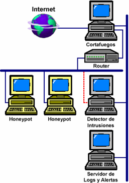

Arquitectura
Hasta ahora, no existe un modelo cerrado de arquitectura de honeynet. Para su desarrollo hay una absoluta libertad a la hora de seleccionar tanto su topología como las herramientas a utilizar para realizar las tareas de control, registro y análisis de las acciones del intruso en su interior. A pesar de esto, si bien es cierto que no hay una estandarización clara, las distintas propuestas del Honeynet Project han venido marcando el modelo a seguir desde la aparición de esta herramienta de seguridad. Esta organización distingue dos arquitecturas distintas, que denomina Honeynets de Primera y Segunda Generación.
Honeynets de Primera Generación
Este modelo destaca por la sencillez con la que soluciona los problemas del control del intruso y la captura de información. Su arquitectura consta de una red de sistemas señuelo dispuestos a ser atacados o honeypots, un cortafuegos, un router, un detector de intrusiones basado en red o NIDS, y un servidor centralizado de logs y alarmas. La tarea de control del intruso se realiza de forma conjunta entre el cortafuegos y el router.
El principal inconveniente que presentan las Honeynets de Primera Generación tiene que ver con sus limitaciones en el control del atacante: si le permite un cierto umbral de conexiones, en el peor de los casos, sería posible que todas y cada una de estas conexiones sea un ataque exitoso y las medidas de contención habrían fracasado.
Honeynets de Segunda Generación
Esta segunda familia introduce una serie de modificaciones, con respecto a las Honeynets de Primera Generación, con las que se pretende conseguir un entorno más difícil de identificar por parte del atacante. Además permiten al intruso una mayor libertad a la hora de realizar nuevas conexiones con el exterior, controlando de forma más estrecha sus acciones en el sistema comprometido.

La arquitectura es más sencilla que la que se mostró en el apartado anterior ya que tanto las tareas de control como las de captura y recolección de datos se realizan en un único sistema denominado honeywall. Esta centralización simplificará también los procesos de desarrollo y administración de la honeynet.
La diferencia fundamental con el método de control utilizado en las Honeynets de Primera Generación radica en que en este modelo se va a incrementar el umbral de conexiones permitidas. En las Honeynets de Segunda Generación se permiten un máximo de 15 conexiones TCP, 20 UDP, 50 ICMP y 15 de otros protocolos por cada honeypot al día. Hasta llegar a estos límites se permitirá al intruso realizar todas las conexiones que precise siempre que no constituyan un ataque.
La captura de datos se realiza de modo similar al empleado en las honeynets de la generación anterior con las única diferencia de que la recopiación de la información se va a realizar de forma centralizada desde el honeywall y que la captura de las sesiones de los intrusos en los honeypots UNIX, en lugar de utilizar shells modificadas, se va a realizar a través del kernel de estos sistemas mediante programas similares a algunos rootkits.